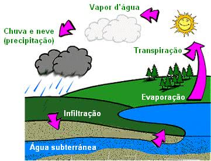
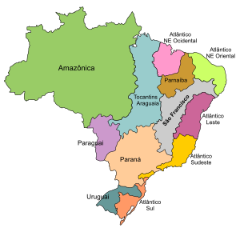

O relevo apresenta diferentes formações que são consequências das ações de agentes endógenos (resultado da energia do interior do planeta que se manifesta pela dinâmica ou tectônica das placas) e agentes exógenos (associados ao clima da área, como as chuvas, ventos e geleiras, que criam ou dão as formas esculturais ao relevo através de um processo erosivo).
O relevo brasileiro tem formação antiga e resulta, principalmente, da sucessão de ciclos climáticos e da ação das forças internas da Terra, como a movimentação das placas tectônicas, as falhas e o vulcanismo.
Existem diferentes classificações do relevo brasileiro, cada uma obedecendo a um critério. Entre as mais conhecidas estão a realizada em 1940 pelo professor Aroldo Azevedo, que utilizou como critério o nível altimétrico. Na década de 1950, o professor Aziz Ab´Saber apresentou uma nova classificação, baseando no processo de erosão e sedimentação. A mais recente classificação do relevo brasileiro é de 1995, elaborada pelo professor do departamento de geografia da Universidade de São Paulo (USP), Jurandyr Ross. Seu trabalho tem como referência o projeto Radambrasil, um levantamento realizado no território brasileiro, entre 1970 e 1985, com um equipamento espacial de radar instalado em avião. Ross considera 28 unidades de relevo, divididas em planaltos, planícies e depressões.
Planícies
São formas de relevo elevadas, com altitudes superiores a 300 metros. Podem ser encontradas em qualquer tipo de estrutura geológica. Nas bacias sedimentares, os planaltos caracterizam-se pela formação de escarpas em áreas de fronteira com as depressões. Formam também as chapadas, extensas superfícies planas de grande altitude. Com 2.995,30 metros, o pico da Neblina é o ponto mais alto do relevo brasileiro.
Depressões
São áreas rebaixadas em consequência da erosão, que se formam entre as bacias sedimentares e os escudos cristalinos. Algumas das depressões localizadas às margens de bacias sedimentares são chamadas depressões marginais ou periféricas. Elas estão presentes em grande número no território brasileiro e são de variados tipos, como a depressão da Amazônia Ocidental (terrenos em torno de 200 metros de altitude).
Planícies
São unidades de relevo geologicamente muito recentes. É uma superfície extremamente plana, sua formação ocorre em virtude da sucessiva deposição de material de origem marinha, lacustre ou fluvial em áreas planas. Normalmente, estão localizadas próximas do litoral ou dos cursos dos grandes rios e lagoas, como as planícies da lagoa dos Patos e da lagoa Mirim, no litoral do Rio Grande do Sul.
Hidrografia é a ciência que estuda as águas existentes no planeta e suas propriedades físicas e químicas, como movimento, cor, temperatura, transparência, volume etc. Conhecer a hidrografia de uma região significa estudar o ciclo da água que provém da atmosfera ou do subsolo.
Ao entrar em contato com a superfície, a água pode escolher três caminhos: escorrer, infiltrar-se no solo ou evaporar. O volume global de água no planeta é de aproximadamente 1,418 milhão de km3 e abrange oceanos, mares, rios, lagos, geleiras, água no subsolo, lagoas e água na atmosfera.
A maior parte dessas águas está concentrada nos oceanos e mares, que ocupam 71% da área do globo. A soma de suas águas resulta em um volume de 1,380 milhão de km3, correspondentes a 97,3% de toda a água da Terra.
As águas continentais representam 2,7% das águas do planeta. A água doce congelada (geleiras e calotas polares) corresponde a 77,2% das águas continentais; a água doce armazenada no subsolo - os lençóis freáticos e poços - corresponde a 22,4%; a água dos lagos e lagoas, 0,35%; a água da atmosfera, 0,04%, e a água dos rios, 0,01%.
Oceanos
Correspondem a uma vasta extensão de água salgada que cobre quase três quartos da superfície da Terra. Cada uma das divisões maiores do oceano constitui-se em áreas geográficas isoladas em regiões diferentes, sendo divididas pelos continentes e grandes arquipélagos em cinco grandes oceanos.
Oceano Pacífico:
é o maior da Terra, com 180 milhões de km2.
Atlântico: é o segundo maior em superfície, com 82,4 milhões de km2.
Índico: é o terceiro maior em extensão, com 74 milhões de km2.
Glacial Ártico: com 13 milhões de km2, formado por mar e geleiras ao redor do Círculo Polar Ártico, seu descongelamento tem sido apressado pelo efeito estufa.
Oceano Glacial Antártico:
constitui um prolongamento dos oceanos Pacífico, Atlântico e Índico. Por essa razão, muitos cientistas, oceanógrafos e geógrafos não reconhecem a existência do Oceano Antártico, considerando-o apenas uma junção de partes dos outros oceanos. É o único que rodeia o globo completamente, com superfície de 20,3 milhões de km2.
Mares
Partes de oceanos que são cercadas por ilhas ou terras são chamadas de "mar". Oceanos, apesar de poderem ser referidos como mares, são áreas extensas de água salgada, desobstruídos por continente, enquanto mar pode ser qualquer corpo de água salgada e geralmente se refere a um corpo de água salgada rodeado por terra.
Os mares se diferem dos oceanos quanto à dimensão e localização geográfica. Enquanto os oceanos cobrem grandes extensões e envolvem todas as massas continentais, os mares são considerados como parte dos oceanos, ocupando áreas mais reduzidas e com menores profundidades. Um mar é uma extensão de água salgada conectada com um oceano. Além de apresentarem menores profundidades.
Um mar é uma extensão de água salgada conectada com um oceano. Além de apresentarem menores profundidades que os oceanos, os mares apresentam também uma maior variação de salinidade, temperatura e transparência das águas. Os cinco maiores mares são: Mar da China do Sul, Mar do Caribe, Mar Mediterrâneo, Mar Bering e Golfo do México.
Lagos
São depressões do solo cheias de água e podem ou não possuir ligação com o mar. Alguns ficam no interior da bacias
fechadas. Outros, por sua grande extensão e água salgada, são chamdos de mares. Os lagos, por influírem sobre a umidade
do ar, têm ação reguladora do clima, é sempre mais ameno e temperado que nas outras regiões.
O ciclo da água é o permanente processo de transformação da água na natureza, passando de um estado para outro (líquido, sólido ou gasoso).
A essa transformação e circulação da água dá-se o nome de ciclo da água ou ciclo hidrológico, que se desenvolve através dos processos de evaporação, condensação, precipitação, infiltração e transpiração.
A água, indispensável para a manutenção da vida, é encontrada na natureza e está distribuída nos rios, lagos, mares, oceanos e em camadas subterrâneas do solo ou em geleiras.
O ciclo da água na natureza é fundamental para a manutenção da vida no planeta Terra, visto que vai determinar a variação climática e interferir no nível dos rios, lagos, mares, oceanos.
O ciclo da água na Natureza
O ciclo da água é composto de cinco etapas:
1. O calor irradiado pelo sol aquece a água dos rios, lagos, mares e oceanos ocorrendo o fenômeno da Evaporação. Nesse momento, ocorre a transformação do estado líquido da água para o seu estado gasoso, à medida que se desloca da superfície da Terra para a atmosfera.
2. O vapor da água esfria, se acumula na atmosfera e se condensa na forma de gotículas, que formarão as nuvens ou nevoeiros. Neste momento, ocorre o processo de Condensação, ou seja, a transformação do estado gasoso da água para seu estado líquido, sendo as nuvens, as gotículas de água líquida suspensas no ar.
3. Com muita água condensada na atmosfera, se inicia o processo de Precipitação, onde as gotículas suspensas no ar se tornam pesadas e caem no solo na forma de chuva. Em regiões muito frias a água condensada passa do estado gasoso para o líquido e rapidamente para o estado sólido, formando a neve ou o granizo.
4. Quando o vapor de água condensado cai sobre a superfície terrestre, ocorre a Infiltração de uma parte dessa água que vai alimentar os lençóis subterrâneos.
5. Parte da água que se infiltrou no solo pode ser absorvida pelas plantas que, depois de utilizá-la a devolvem à atmosfera por meio do processo de Transpiração.
A água também pode evaporar ou escoar sobre o solo e abastecer os rios, que deságuam em mares e oceanos, reiniciando todo o processo do ciclo da água.

O ciclo da água
O Brasil possui um território privilegiado em potencial hídrico, que detém uma das maiores reservas de água doce do mundo. Essas reservas estão distribuídas em rios caudalosos que compõem bacias hidrográficas de longas extensões, favorecem a produção de energia elétrica e também a navegação.
• Grande incidência de rios torrenciais, com uma grande abundância de água, e perenes, isso em decorrência do clima predominantemente úmido que prevalece no país, salvo os rios do sertão nordestino que possuem rios sazonais (temporários);
• Preponderância de foz (onde termina o curso de um rio) dos rios do tipo estuário (a foz abre-se largamente sem acumulação de sedimentos) e restrita ocorrência de foz tipo delta (quando há um grande acúmulo de sedimentos na foz do rio);
• As variações fluviais das bacias hidrográficas são de domínio principal do tipo pluvial, no entanto, ocorre o desenvolvimento de regimes nivais (rios formados ou influenciados por águas derivadas de geleiras), no caso da bacia Amazônica e do Paraguai;
• Reduzido número de lagos;
• Predominância de rios com tipo de drenagem exorreica (rios que deságuam no mar);
• Os rios escoam suas águas sobre planaltos e depressões, o que resulta em um grande potencial hidráulico.
Diante da imensa abundância hídrica que o Brasil possui, salvo o sertão nordestino, o país está praticamente imune à falta de água ou pelo menos não possui grandes preocupações nesse sentido, o que é um grande privilégio, uma vez que a escassez desse importante recurso já se tornou realidade em muitos países e as previsões são pessimistas em relação ao assunto, até porque sabem que a água não é infinita como se acreditava anteriormente.
Os brasileiros são dissipadores quando o assunto é o nível de consumo de água e o devido tratamento que destinamos aos rios, especialmente aqueles que cruzam diversos centros urbanos, independente do tamanho. Em sua maioria, trata-se de rios totalmente poluídos e sem vida, pelo menos no perímetro urbano.
Bacia Hidrográfica, também conhecida como bacia de drenagem, consiste em uma porção da superfície terrestre drenada por um rio principal, seus afluentes e subafluentes. O Brasil, em virtude de sua grande extensão territorial, apresenta 12 grandes bacias hidrográficas, de acordo com o Instituto Brasileiro de Geografia e Estatística (IBGE) e o Conselho Nacional de Recursos Hídricos (CNRH), que são os órgãos nacionais responsáveis pelo planejamento ambiental e o uso racional da água. Essas bacias de drenagem são delimitadas pela topografia do terreno. Confira as características de cada uma:
Bacia Hidrográfica Amazônica: com sete milhões de quilômetros quadrados, essa é a maior bacia hidrográfica do mundo. No Brasil, ela compreende uma área de 3.870.000 km², estando presente nos estados do Acre, Amapá, Amazonas, Roraima, Rondônia, Mato Grosso e Pará.
Bacia Hidrográfica do Tocantins-Araguaia: é a maior bacia de drenagem exclusivamente brasileira (767.059 quilômetros quadrados). Os principais rios são o Tocantins, que nasce em Goiás e desemboca na foz do rio Amazonas; e o rio Araguaia, que nasce na divisa de Goiás com Mato Grosso e se junta ao rio Tocantins na porção norte do estado do Tocantins.
Bacia Hidrográfica do São Francisco: com aproximadamente 640 mil quilômetros quadrados, essa bacia hidrográfica tem como principal rio o São Francisco, que nasce na Serra da Canastra (MG) e percorre os estados da Bahia, Pernambuco, Alagoas e Sergipe até a foz, na divisa entre esses dois últimos estados.
Bacia Hidrográfica do Paraná: essa é a principal porção da bacia Platina (compreende os países da Argentina, Bolívia, Brasil, Paraguai e Uruguai). No Brasil, a bacia hidrográfica do Paraná possui 879.860 quilômetros quadrados, apresentando rios de planalto e encachoeirados, características elementares para a construção de usinas hidrelétricas: Furnas, Água Vermelha, São Simão, Capivari, Itaipu (a maior usina do mundo), entre tantas outras.
Bacia Hidrográfica do Parnaíba: está presente nos estados do Piauí, Maranhão e na porção extremo oeste do Ceará, totalizando uma área de 344.112 quilômetros quadrados.
Bacia Hidrográfica do Atlântico Nordeste Oriental: com extensão de 287.348 quilômetros quadrados, a bacia hidrográfica do Atlântico Nordeste Oriental está presente em cinco estados nordestinos: Piauí, Ceará, Rio Grande do Norte, Paraíba, Pernambuco e Alagoas.
Bacia Hidrográfica Atlântico Nordeste Ocidental: seus principais rios são o Gurupi, Pericumã, Mearim, Itapecuru Munim e Turiaçu. Essa bacia de drenagem possui 254.100 quilômetros quadrados, compreendendo áreas do Maranhão e Pará.
Bacia Hidrográfica Atlântico Leste: com extensão de 374.677 quilômetros quadrados, essa bacia hidrográfica engloba os estados de Sergipe, Bahia, Minas Gerais e Espírito Santo. Em sua região é possível encontrar fragmentos de Mata Atlântica, Caatinga, Cerrado e vegetação costeira.
Bacia Hidrográfica Atlântico Sudeste: presente nos estados do Espírito Santo, Minas Gerais, Rio de Janeiro, São Paulo e Paraná, a região hidrográfica Atlântico Sudeste apresenta 229.972 quilômetros quadrados. Ela é formada pelo rio Doce, Itapemirim, São Mateus, Iguape, Paraíba do Sul, entre outros.
Bacia Hidrográfica Atlântico Sul: com área de 185.856 quilômetros quadrados, essa bacia hidrográfica nasce na divisa entre os estados de São Paulo e Paraná, percorrendo até o Rio Grande do Sul. Com exceção do Itajaí e Jacuí, os rios que formam essa bacia de drenagem são de pequeno porte.
Bacia Hidrográfica do Uruguai: é composta pela junção dos rios Peixe e Pelotas. Com área de 174.612 quilômetros quadrados, essa bacia hidrográfica está presente nos estados do Rio Grande do Sul e Santa Catarina. Possui grande potencial hidrelétrico, além de ser importante para a irrigação nas atividades agrícolas da região.
Bacia Hidrográfica do Paraguai: no Brasil, essa bacia hidrográfica está presente nos estados de Mato Grosso e Mato Grosso do Sul, englobando uma área de 361.350 quilômetros quadrados. Tem como principal rio o Paraguai, que nasce na Chapada dos Parecis (MT). Possui grande potencial para a navegação.
